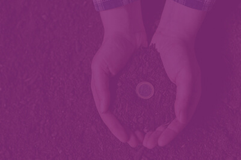
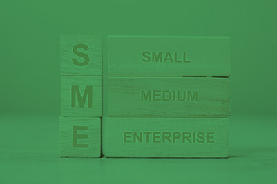
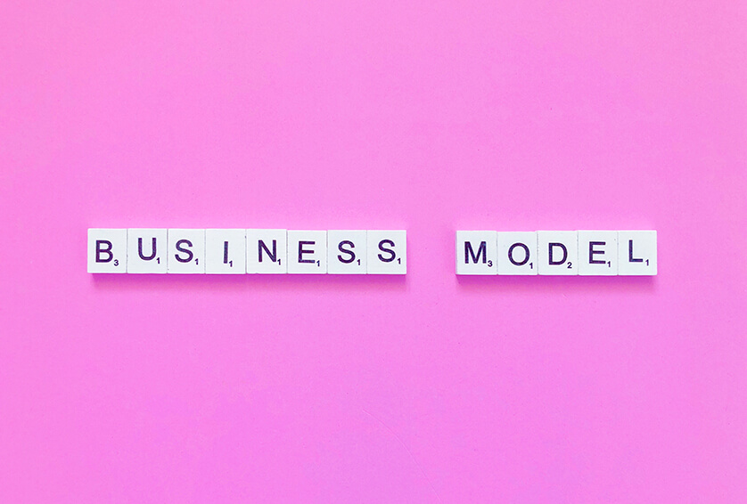

SWIT
SWIT Research Group: Sustainable Wealth Creation based on Innovation and Technology.
Towards sustainable prosperity for emerging economies.
Conceptual Axes
View more
Sustainable Wealth and Prosperity Creation
View more

Circular Value Systems
View more
Systemic Vision and System Based Leadership
View more
Disruptive, Systemic and Circular Innovation (DiSC)
View more

Circular SMEs and rural development
View more
SWIT Tools
View all tools
SWIT’s main three levels platform
View more

New Business Model Design based on Circular Economy
View more
Innovative, Sustainable and Resilient Cities
View more
View all tools
Research lines
View all
Sustainable Plastic industry
View more
Decoupling Model based on Circular Extended Value Systems
View more
Resilient and Sustainable Cities
View more
Greatest Challenges and Circular Economy Solutions for post COVID era
View more